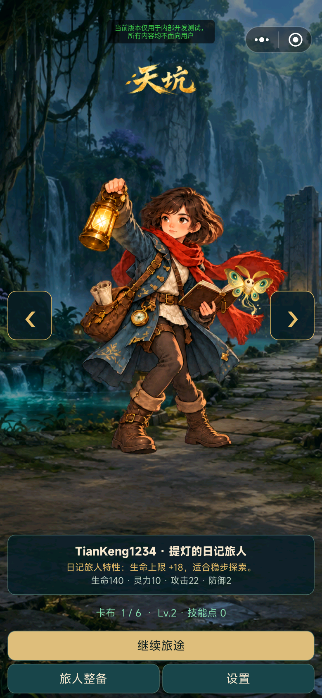
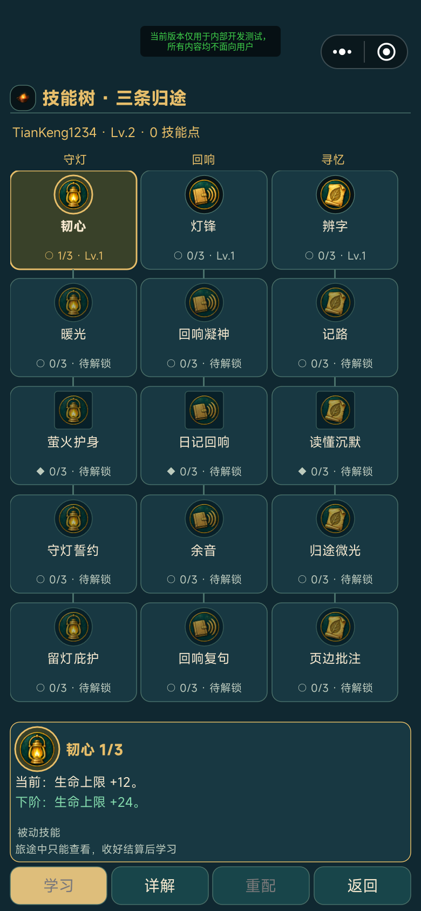
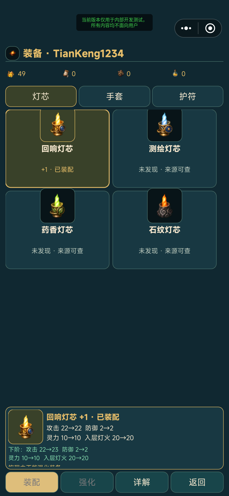
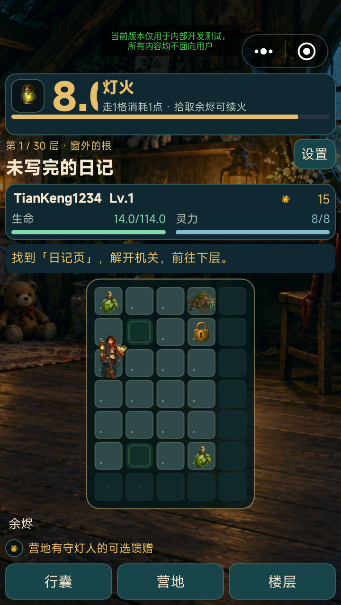

灯火让每一步都有代价
灯火既是氛围包装，也是探索资源。有限行动、补光物品和未知地格形成路线判断，让文字遭遇与空间探索相互支持。
TAPTAP MAKER / 个人 AI 游戏实践
在灯火耗尽前探索 30 层天坑，阅读遭遇、观察怪物意图，决定战斗、交涉或绕行。六位旅人通过技能、装备和永久收藏形成不同流派。
GAMEPLAY / 核心体验
选择旅人后进入逐格探索，灯火同时限制本轮行动步数。路线上需要判断怪物意图、拾取补给、读取线索并选择应对；旅程结束后带回经验和永久收获，学习技能、装配装备，再从第一层重新出发。局内路线和局外成长共同决定下一次能走多远。
IN-GAME CAPTURES / 游戏画面
以下来自 Android 模拟器的真实测试构建截图，保留平台测试标记。首页、技能和装备采于 10 月 15 日，探索图采于前一天。




DESIGN / 规则与取舍
灯火既是氛围包装，也是探索资源。有限行动、补光物品和未知地格形成路线判断，让文字遭遇与空间探索相互支持。
六人各有三条五节点技能分支，共 90 个节点。弦音通过交替行动积拍，铜芽消耗有限组件等差异机制，提供不同于单纯数值加成的流派选择。
十二件装备、二十件图文收藏和角色技能保留长期进展。终阶选择与免费重配让玩家能调整构筑，再通过新一轮探索检验方案。
技能树采用固定详情区，装备页支持属性比较和强化，长说明可以滚动阅读。针对窄屏与顶部宿主胶囊持续调整字号、安全区和触控范围。
MY PRACTICE / 项目推进
通过 AI 协作整合文字探索、局外成长和多角色构筑，推进六旅人及 90 技能的内容扩展。将角色差异落实为可运行规则，并根据界面反馈迭代技能详情、大图装备、长文字阅读和手机安全区；结合 Android 模拟器检查不同屏幕比例下的主要页面。
六旅人及大图界面版已于 2026 年 10 月 15 日取得线上更新成功回执，公开介绍已同步六人 90 技能。图中保留平台测试标记；实体手机输入法、广告与跨设备同步仍需进一步验收。
TAPTAP / 游戏入口
TapTap 页面提供公开介绍与平台支持的试玩入口。平台当前可玩的内容以该页面为准，本页同时记录开发中的后续迭代。